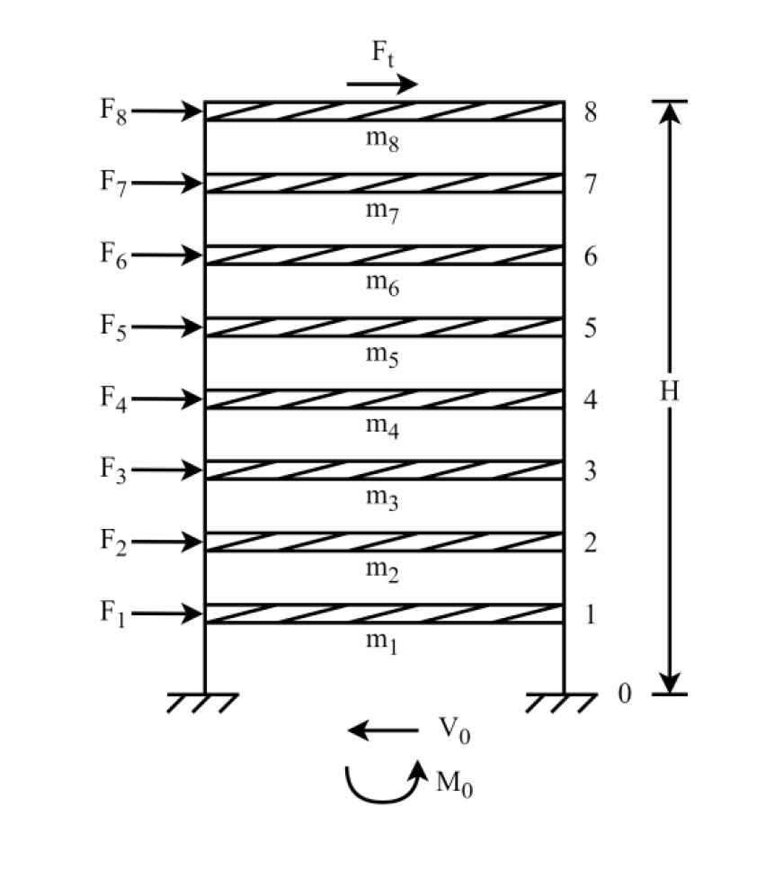
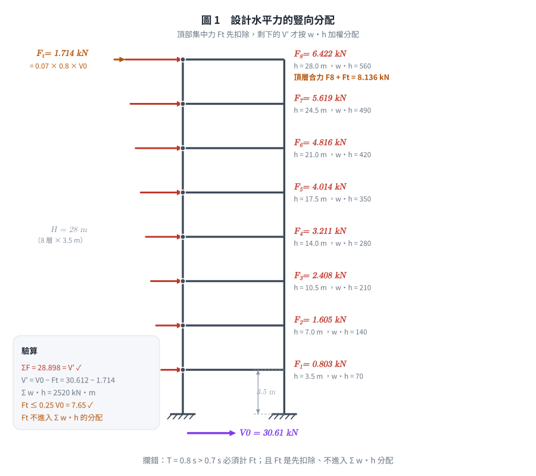
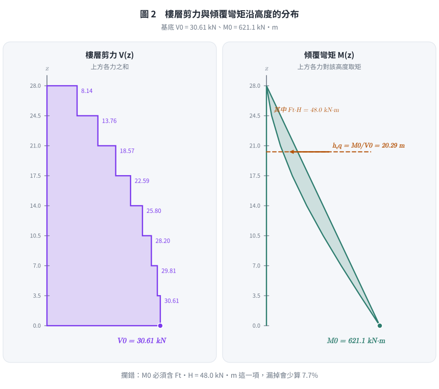
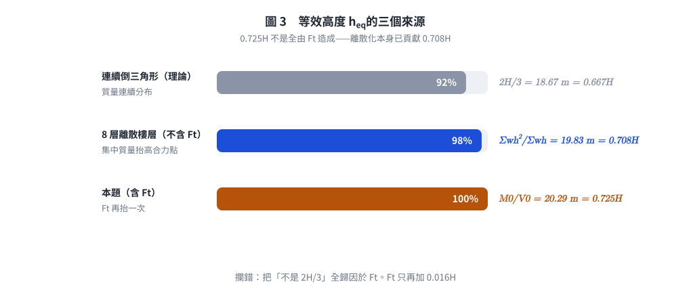

考題編號：SD-2025-1
主分類： SD-U2-2 建築耐震設計規範
副分類： SD-U2-1 地震力之設計規範
分析方法： 等效靜力法
標籤： 等效靜力法 設計地震力 樓層剪力分布 基底剪力 頂部集中力 建築耐震規範
1. 原始題目重述 (Problem Restatement)
一棟 8 層樓平面構架，各樓層高 3.5 m，總樓高 H = 28 m，各樓層重 20 kN，總重 W = 160 kN。
已知： - 基本周期 T = 0.8 sec - 重要性因子 I = 1.25 - 設計地震加速度係數 S_aD = 0.6 - 結構韌性容量 Fu = 2 - 結構基本降伏地震力放大倍數 αy = 1.4
設計地震水平總橫力公式：
$$V = \frac{I \cdot S_{aD}}{1.4\,\alpha_y \cdot F_u} W$$
求： 1. 基底總剪力 V₀（5 分） 2. 各樓層設計水平力 Fᵢ（15 分） 3. 基底總彎矩 M₀（5 分）

圖說：8層等高構架（各層 3.5m），第 i 層高度 hᵢ = 3.5i m，各層質量相同（wᵢ = 20 kN）。頂部額外集中力 Ft 施加於第 8 層（h₈ = 28 m）。
2. 考題核心精神與出題者意圖 (Core Concepts & Examiner's Intent)
核心觀念： 台灣建築耐震設計規範等效靜力法的完整操作流程。
出題者測驗能力： 1. 能否正確套用設計地震力公式（V 公式分子分母組成） 2. 是否知道「T > 0.7 sec 時需計算頂部集中力 Ft」這個關鍵條件 3. 樓層分配力的高度加權原則（高樓層分配較多） 4. 能否累加得到基底彎矩（等效靜力的力矩計算）
陷阱核心： 很多考生忘記 T = 0.8 sec > 0.7 sec 需加 Ft，直接用 V 分配，導致 F₈ 算少、M₀ 偏低。
3. 解題戰略地圖與陷阱分析 (Strategic Roadmap & Trap Analysis)
作戰計畫：
Step 1: 代入 V 公式 → V₀
Step 2: 判斷 T 是否 > 0.7 sec → 計算頂部集中力 Ft
Step 3: V' = V₀ - Ft，計算 Σwᵢhᵢ（高度加權總和）
Step 4: 各樓層 Fᵢ = (wᵢhᵢ/Σwⱼhⱼ) × V'
Step 5: M₀ = Σ Fᵢ × hᵢ + Ft × H（所有力對底部取矩）
關鍵陷阱：
| 陷阱 | 說明 | 應對 |
|---|---|---|
| ⚠ 忘記 Ft | T = 0.8 > 0.7 sec，必須計算頂部集中力 | Ft = 0.07TV，且 Ft ≤ 0.25V |
| ⚠ Ft 上限 | 若 0.07TV > 0.25V，取 Ft = 0.25V | 本題 0.07×0.8 = 0.056 < 0.25，無上限問題 |
| ⚠ V 公式分母 | 分母是 1.4 × αy × Fu，不是 αy × Fu | 注意 1.4 為固定係數（非標準 1.0） |
| ⚠ Ft 計入 M₀ | Ft 施加於頂層，需 × H 計入彎矩 | M₀ 含 Ft × 28 項 |
3.5 變數層次分析 (Variable Hierarchy Analysis)
複習提示：第一次解題後，在每個卡住的知識點旁標記
⚠；第二次複習時只看有⚠的項目。
最終目標
求基底剪力 V₀、各樓層地震力 Fᵢ（含頂部集中力 Ft）及基底彎矩 M₀。
本題關鍵公式（依計算順序）
$$V_0 = \frac{I \cdot S_{aD}}{1.4\,\alpha_y \cdot F_u} \cdot W \quad \text{（設計地震力）}$$
$$F_t = 0.07\,T \cdot V_0 \quad (T > 0.7\text{ sec}) \quad \text{（頂部集中力）}$$
$$V' = \boxed{V_0} - \boxed{F_t} \quad \text{（扣除頂部集中力後的剩餘剪力）}$$
$$F_i = \frac{w_i h_i}{\sum_j w_j h_j} \cdot \boxed{V'} \quad \text{（各樓層分配力）}$$
$$M_0 = \sum_{i=1}^{8} F_i \cdot h_i + \boxed{F_t} \cdot H \quad \text{（基底彎矩，所有力對底部取矩）}$$
L1：題目直接給定
| 符號 | 數值 | 說明 |
|---|---|---|
| n | 8 | 樓層數 |
| h_story | 3.5 m | 各層高度 |
| H | 28 m | 總樓高 |
| w_i | 20 kN（各層均等） | 各樓層重量 |
| W | 160 kN | 總重 |
| T | 0.8 sec | 基本周期 |
| I | 1.25 | 重要性因子 |
| S_aD | 0.6 | 設計地震加速度係數 |
| F_u | 2 | 結構韌性容量 |
| α_y | 1.4 | 基本降伏地震力放大倍數 |
L2：需知識點推導
① 設計地震力 V₀
| 符號 | 公式／來源 | 卡關? |
|---|---|---|
| V₀ | V = IS_aD/(1.4α_y·Fu)×W |
② 頂部集中力 Ft
| 符號 | 公式／來源 | 卡關? |
|---|---|---|
| 判斷條件 | T = 0.8 > 0.7 sec → 需計算 Ft | |
| Ft | 0.07 × T × V₀ ≤ 0.25V₀ | |
| V' | V₀ − Ft |
③ 各樓層高度與加權項
| 符號 | 公式／來源 | 卡關? |
|---|---|---|
| hᵢ | 3.5i（m），i=1~8 | |
| Σwᵢhᵢ | Σ 20×3.5i，i=1~8 | |
| wᵢhᵢ/Σwⱼhⱼ | 高度加權比例 |
④ 樓層力與基底彎矩
| 符號 | 公式／來源 | 卡關? |
|---|---|---|
| Fᵢ | (wᵢhᵢ/Σwⱼhⱼ) × V' | |
| M₀ | ΣFᵢ×hᵢ + Ft×H |
L3：深層知識（不懂就卡住）
| 知識點 | 說明 | 卡關? |
|---|---|---|
| Ft 存在條件 | 台灣規範：T > 0.7 sec 時，高階模態效應顯著，頂部需加額外集中力 Ft = 0.07TV（最大 0.25V） | |
| 等高度加權分配 | 模擬第一振態（倒三角形）分布：hᵢ 越大分配越多 | |
| αy 物理意義 | 結構實際屈服時比設計地震力大 αy 倍（過強度），故設計地震力需除以 αy（設計地震力 = 最大地震力 / (αy×Fu)） | |
| M₀ 計算 | Ft 與 F₈ 同在 h = 28 m，兩者對底部的力臂相同，合併或分開計算結果一樣；重點是不可遺漏 Ft 這一項（漏掉會少 48 kN·m） |
4. 步驟化詳細計算過程 (Step-by-Step Detailed Calculation)
📊 互動圖：
SD-2025-1-seismic-viz.html
Step 1：基底總剪力 V₀
$$V_0 = \frac{I \cdot S_{aD}}{1.4\,\alpha_y \cdot F_u} \cdot W = \frac{1.25 \times 0.6}{1.4 \times 1.4 \times 2} \times 160$$
$$= \frac{0.75}{3.92} \times 160 = 0.1913 \times 160$$
$$\boxed{V_0 \approx 30.61 \text{ kN}}$$
Step 2：頂部集中力 Ft
由於 T = 0.8 sec > 0.7 sec，需計算 Ft：
$$F_t = 0.07 \times T \times V_0 = 0.07 \times 0.8 \times 30.61 = 1.714 \text{ kN}$$
驗核上限：$0.25 V_0 = 7.65 \text{ kN} > 1.714 \text{ kN}$ ✓（未超過上限）
剩餘分配剪力：
$$V' = V_0 - F_t = 30.61 - 1.71 = 28.90 \text{ kN}$$
Step 3：高度加權總和 Σwᵢhᵢ
各樓層高度 hᵢ = 3.5i（m），各層 wᵢ = 20 kN：
$$\sum w_i h_i = 20 \times (3.5 + 7.0 + 10.5 + 14.0 + 17.5 + 21.0 + 24.5 + 28.0)$$ $$= 20 \times 126.0 = 2520 \text{ kN·m}$$
Step 4：各樓層設計水平力 Fᵢ
$$F_i = \frac{w_i h_i}{\sum w_j h_j} \times V' = \frac{20 h_i}{2520} \times 28.90$$
| 樓層 i | hᵢ (m) | wᵢhᵢ (kN·m) | wᵢhᵢ/Σ | Fᵢ (kN) |
|---|---|---|---|---|
| 1 | 3.5 | 70 | 1/36 | 0.803 |
| 2 | 7.0 | 140 | 2/36 | 1.605 |
| 3 | 10.5 | 210 | 3/36 | 2.408 |
| 4 | 14.0 | 280 | 4/36 | 3.211 |
| 5 | 17.5 | 350 | 5/36 | 4.014 |
| 6 | 21.0 | 420 | 6/36 | 4.816 |
| 7 | 24.5 | 490 | 7/36 | 5.619 |
| 8 | 28.0 | 560 | 8/36 | 6.422 |
| Σ | — | 2520 | 1 | 28.90 ✓ |
第 8 層實際設計水平力（含頂部集中力）：
$$F_8^{(\text{total})} = F_8 + F_t = 6.422 + 1.714 = \mathbf{8.136 \text{ kN}}$$

圖 1 設計水平力的豎向分配。箭頭長度由算得的 $F_i$ 決定，頂部橘色段即 $F_t$。它攔的是最常見的兩個錯：$T = 0.8\text{ s} > 0.7\text{ s}$ 卻忘記計 $F_t$，以及把 $F_t$ 也丟進 $\sum w_ih_i$ 一起分配（正確順序是先扣除、再分配）。
Step 5：基底總彎矩 M₀
$$M_0 = \sum_{i=1}^{8} F_i \cdot h_i + F_t \cdot H$$
先算 ΣFᵢhᵢ：
$$\sum F_i h_i = \frac{V'}{\sum w_j h_j} \sum w_i h_i^2$$
$$\sum w_i h_i^2 = 20\times(3.5^2+7^2+10.5^2+14^2+17.5^2+21^2+24.5^2+28^2)$$ $$= 20\times(12.25+49+110.25+196+306.25+441+600.25+784)$$ $$= 20 \times 2499 = 49\,980 \text{ kN·m}^2$$
$$\sum F_i h_i = \frac{V'}{2520} \times 49\,980 = \frac{28.898}{2520} \times 49\,980 = 28.898 \times 19.833 = 573.1 \text{ kN·m}$$
加入頂部集中力貢獻：
$$M_0 = 573.1 + 1.714 \times 28 = 573.1 + 48.0 = \boxed{621.1 \text{ kN·m}}$$

圖 2 樓層剪力 $V(z)$ 與傾覆彎矩 $M(z)$。右圖的橘色虛線為等效高度 $h_{eq} = M_0/V_0$。它攔的是 $M_0$ 漏掉 $F_t \cdot H = 48.0$ kN·m 這一項——漏掉會少算 7.7%。
彙整答案
| 問題 | 答案 |
|---|---|
| (一) 基底總剪力 V₀ | 30.61 kN |
| (二) 頂部集中力 Ft（加於 F₈ 上） | 1.714 kN；各樓層 Fᵢ 詳見上表 |
| (三) 基底總彎矩 M₀ | 621.1 kN·m |
5. 關鍵爭議點與進階探討 (Critical Issues & Advanced Discussion)
5.1 Ft 的規範依據與物理意義
台灣建築耐震設計規範規定：當 T > 0.7 sec 時，結構高階模態效應不可忽略。頂部集中力 Ft = 0.07TV（最大 0.25V）是對高階模態的簡化等效修正——因為高階模態使頂部的相對加速度更大。本題 Ft/V₀ = 1.714/30.61 = 5.6%，影響不算小。
5.2 本式即現行規範的最小設計水平總橫力式（勿誤認為「舊版」）
$V = \dfrac{I\,S_{aD}}{1.4\alpha_y F_u}W$ 就是現行《建築物耐震設計規範及解說》2.2 節的最小設計水平總橫力式，不是被淘汰的舊格式。$S_{DS}$、$S_{D1}$ 在規範中的角色是建構設計反應譜 $S_{aD}(T)$ 的兩個控制參數（$T_0^D = S_{D1}/S_{DS}$），本身並不取代這條總橫力式（參考 [[SD-C-011]]）。
與規範原式的兩點差異（本題已被題目簡化）：
| 項目 | 規範原式 | 本題 |
|---|---|---|
| 譜加速度項 | $\left(\dfrac{S_{aD}}{F_u}\right)_m$（下標 $m$ 為規範 2.2 的修正值，反映非彈性變形帶來的等效阻尼提高而再折減） | 題目直接給 $S_{aD}=0.6$、$F_u=2$，按 $S_{aD}/F_u$ 直接代入 |
| $F_u$ 來源 | 由結構系統韌性容量 $R$ 算出容許韌性容量 $R_a=1+\dfrac{R-1}{1.5}$，再依週期分段取 $R_a$ 或 $\sqrt{2R_a-1}$ | 題目直接給 $F_u = 2$ |
考場上若題目已把 $S_{aD}$ 與 $F_u$ 直接給定（如本題），就照給定值代入，不必再回頭做 $(S_{aD}/F_u)_m$ 修正。
5.3 M₀ 等效高度
$$h_{eq} = \frac{M_0}{V_0} = \frac{621.1}{30.61} \approx 20.29 \text{ m} \approx 0.725H$$
這個 0.725H 由兩部分構成，不要全記在 Ft 頭上：
| 來源 | $h_{eq}$ | 說明 |
|---|---|---|
| 連續倒三角形（理論） | $\frac{2}{3}H = 18.67$ m ＝ 0.667H | 力密度沿高度線性、且質量連續分布時的結果 |
| 8 層離散樓層（不含 Ft） | $\dfrac{\sum w_ih_i^2}{\sum w_ih_i} = \dfrac{2499}{126} = 19.83$ m ＝ 0.708H | 樓層集中質量使合力點高於連續解，與 Ft 無關 |
| 再加入 Ft（本題） | 20.29 m ＝ 0.725H | Ft 作用於 $H$，把合力點再往上抬 0.017H |
離散化本身已貢獻 0.708H，Ft 只再加 0.017H。考場上若被問「為何不是 2H/3」，兩個理由都要講。

圖 3 等效高度的三個來源。它攔的是把「$h_{eq}$ 不等於 $2H/3$」全歸因於 $F_t$ 的誤解：離散樓層本身已貢獻 0.708H，$F_t$ 只再加 0.017H。
5.4 考場答題策略
- 分數分配：V₀（5分）、Fᵢ（15分）、M₀（5分）
- 若計算 Ft 出錯，後兩題連帶失分，但步驟分仍可部分給分
- 最安全做法：先列 Ft 公式並判斷條件，再代入數字
圖解補繪：2026-09-02（向量圖，由 gen_SD-2025-1.py 產生，可重跑；SVG 供 wiki／PDF，2× PNG 供簡報與影片管線）